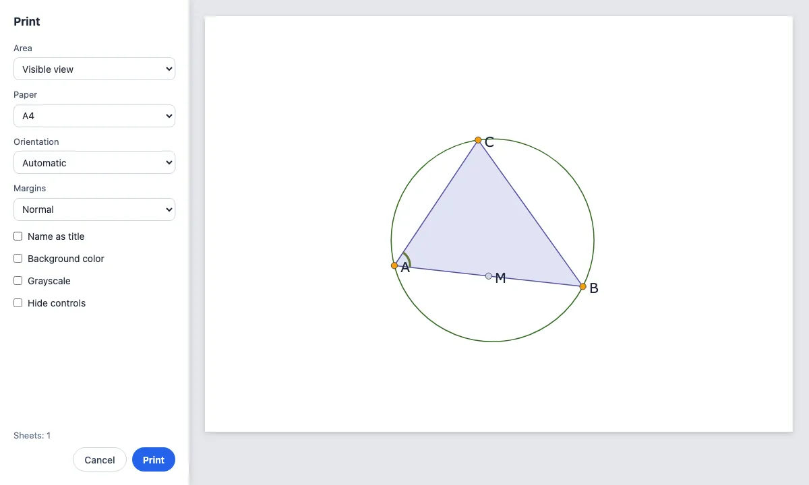
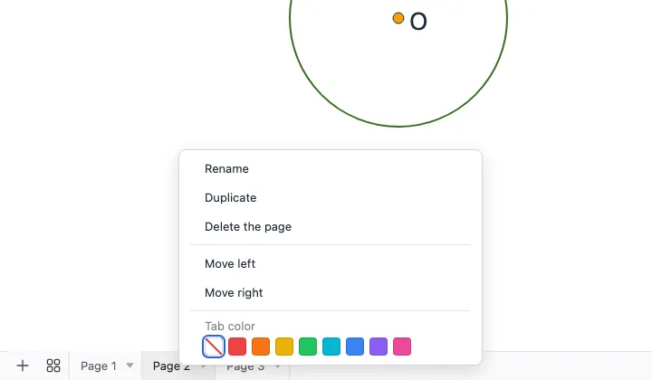

Opening and saving
Opening
Open loads a file:
| Extension | Origin |
|---|---|
.dgo |
DocGeo, native format |
.dgp |
DGPad, imported |
.ggb |
GeoGebra, imported |
You can also drag the file’s icon onto the page, in the editor as in the player.
The opened figure replaces the current one and clears the undo history.
An online figure also opens from a link (see Sharing a figure by link).
The File menu also offers Open… (Ctrl O) and New figure, which starts from an empty figure.
Recent documents
File › Open recent lists the last ten figures opened or saved, the most recent first: in Chrome and Edge, files on the computer; in every browser, figures opened by a link. The browser may ask again for permission to read the file. A file moved, renamed or deleted since is reported and removed from the list. Clear list empties it.
Incomplete import
An unsupported DGPad or GeoGebra element is ignored along with its dependents; the prompt lists them (“Not imported: …”). Details are in DGPad and GeoGebra import.
Saving
, File › Save or
Ctrl S saves the figure as
.dgo. The view (zoom, 3D orientation, coordinate
system) is saved.
In Chrome and Edge, DocGeo saves like an application: the first
save asks where to put the file, the next ones replace it
without asking. A .dgo figure opened with
or dropped on the page is saved back to
its file; the browser asks once for permission to modify it. A
DGPad or GeoGebra figure is never overwritten: its first save
creates a .dgo file.
Save as… (Ctrl Shift
S) chooses another file.
The file name shows at the end of the menu bar; a red dot signals unsaved changes. It disappears on saving, or when undoing back to the saved state. Moving or zooming the view does not count as a change.
In other browsers (Firefox, Safari), or when DocGeo is embedded
in another page, saving downloads the figure under the name of
the opened figure (figure.dgo for a new figure).
.dgo is the only save format: opening a DGPad or
GeoGebra figure and saving it converts it.
Recovering an unsaved figure
As long as a figure has unsaved changes, DocGeo keeps a copy of it in the browser. If the editor closes before it is saved (window closed by mistake, crash), it appears, dated, under Unsaved figures at the top of File › Open recent: once chosen, it comes back, still marked as unsaved. These copies are kept for fourteen days, ten at most; Clear list deletes them too.
This copy stays in the browser of this computer: it does not replace saving. Nothing is kept when DocGeo is embedded in another page.
File › Print… (Ctrl P) shows a preview of the sheets beside their settings. Print then opens the browser’s print dialog, which can also save as PDF.

The figure fills the sheet up to the margins: lines and curves reach the edge. It is never enlarged at first: strokes and labels keep their size on screen.
- Dragging on a sheet moves the figure; the mouse wheel zooms it. The editor’s view does not change.
- Area: Visible view centers the sheet on what the screen shows, without the part hidden by the tool palette or the properties; Figure only centers it on the objects drawn.
- Paper, Orientation (Automatic: from the area) and Margins. Changing these settings, the area or the title reframes the sheets.
- Name as title writes the name of the figure, or of the page, at the top of the sheet; Background color prints the figure’s background; Grayscale removes the colors; Hide controls removes sliders, checkboxes, input fields, drop-down lists and buttons.
- In a workbook, All pages prints one sheet per page.
Esc or Cancel closes the preview. The settings stay the same until the editor is closed.
Workbooks: several pages
A workbook gathers several figures, its pages, in a single
.dgo file. Its tabs, below the figure, show one
page at a time.

- File › New page adds an empty page after the others: the current figure becomes page 1. Then the + button at the start of the tabs does the same, and the button next to it lists all the pages.
- A right click on a tab, or on its ▾ arrow, opens the page’s menu: Rename, Duplicate, Delete the page, Move left or Move right, and the Tab color.
- A double click on a tab renames its page (Enter confirms, Esc cancels); two pages cannot have the same name. A dragged tab changes place.
- Pages are independent: each has its objects, its axes, its macros and its undo history, found again when you come back to it. A formula can however read a value from another page (Reading another page). Program globals, however, are common to the whole workbook (Blocks and turtle).
- Saving writes the whole workbook, each page as it was left; the page shown is the one that will open. A workbook reduced to one page becomes a plain figure again.
The player shows the tabs too. A figure embedded in a web page shows only the page that was displayed when it was saved.
Sharing a figure by link
A figure put online opens from a link: the editor’s address,
followed by ?url= and the file’s link, pasted as it
is.
https://doctools.org/apps/docgeo/editor.html?url=https://www.dropbox.com/scl/fi/…/thales.dgo?rlkey=…&dl=0The file’s link can come from:
| Service | Link to copy |
|---|---|
| Google Drive | sharing link, access “Anyone with the link” |
| Dropbox | sharing link |
| OneDrive |
sharing link of a personal account
(https://1drv.ms/u/c/…)
|
| Nextcloud | public sharing link, without a password |
| Website |
file address (.dgo,
.dgp or .ggb)
|
The format is recognized from the file’s content, and its name
shows at the end of the menu bar. The online file is never
modified: saving creates a .dgo file on the
computer.
?url= comes last in the address: everything after
it is part of the link
(editor.html?lang=fr&url=…).
Embedding a figure in a web page
A figure published online can also be shown, and manipulated, in a web page: see Embedding in a web page.
Language
DocGeo takes the browser’s language;
?lang= forces it (ar, de,
el, en, es,
fr, hi, it,
nl, pt, zh,
zh-TW). The language also sets the command names
(Midpoint, Milieu,
Mittelpunkt…); English names are understood in
every language.